This is the second of four posts documenting my progress toward processing and analyzing QuantSeq FWD 3’ tag RNAseq data with the nf-core/rnaseq workflow.
- Configuring & executing the nf-core/rnaseq workflow
- Exploring the workflow outputs
- Validating the workflow by reproducing results published by Xia et al (no UMIs)
- Validating the workflow by reproducing results published by Nugent et al (including UMIs)
Many thanks to Harshil Patel, António Miguel de Jesus Domingues and Matthias Zepper for their generous guidance & input via nf-core slack. (Any mistakes are mine.)
tl;dr
- This post documents the output files & folders of the nf-core/rnaseq workflow (v 3.10.1), run with default settings with the
star_salmonaligner / quantitation method. - For additional information, e.g. on the content of the MultiQC report, please see the official nf-core/rnaseq documentation.
Reports
MultiQC report
The MultiQC HTML report is a one-stop-shop that summarises QC metrics across the workflow. It can be found int he multiqc folder, in a subdirectory named according to the aligner & quantifier combination used (default: star_salmon).
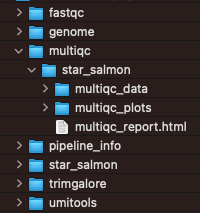
Pipeline info
The pipeline_info folder contains html reports and text (CSV, TXT, YML) files with information about the run, including the versions of the software tools used.
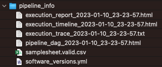
FastQC reports
The fastqc folder contains the output of the fastqc tool. Most of the reported metrics are included in the MultiQC report as well, but the HTML reports for individual samples are available here if needed.
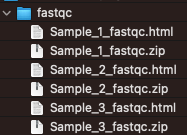
Trim Galore reports
The trimgalore folder contains
- trimming reports for each sample
- the
fastqcsub-folder with quality metrics for the trimmed FASTQ files
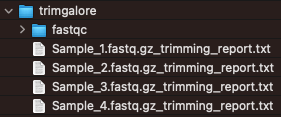
umitools
This folder contains the log files returned by UMI-tools
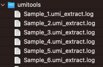
Workflow results
The main output of the workflow is available in the star_salmon subdirectory. (This folder is named after the selected alignment & quantification strategy, e.g. star_salmon is present only if this tool combination was used.)
It contains multiple folders, as well as the (deduplicated) sorted BAM files for each sample.
bigwig
Genome coverage in bigWig format for each sample.
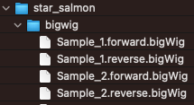
DESeq2 object & QC metrics
The workflow aggregates all counts into a DESeq2 R objects, performs QC and exploratory analyses and serializes the object as deseq2.dds.RData.
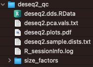
Dupradar
The dupRadar Bioconductor package performs duplication rate quality control.
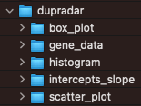
Featurecounts
Output from featurecounts tool is only used to generate QC metrics. For actual quantitation of the gene-level results, the output of salmon (default) or rsem are used.
The metrics reported in the featurecounts folder are included in the MultiQC report.
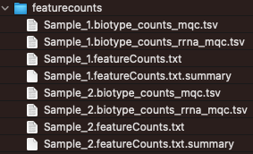
STAR log files
This folder contains log files output by the STAR aligner.
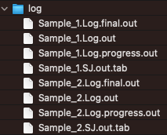
Qualimap
The qualimap package generates QC metrics from BAM files.
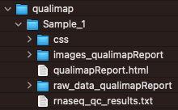
RSEQC
The output of the rseqc QC control package are in this directory.
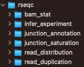
Alignments & gene-level counts
The star_salmon folder also contains the main results of the workflow: gene-level counts and alignments (BAM files).
Salmon quantitation
Aggregated
The workflow outputs salmon quantitation results aggregated across all samples. Different types of counts (e.g. raw, length-scaled, TPMs) are available - the choice for downstream analyses depends on the chosen approach. Please see tximport for details.
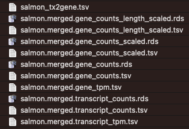
By sample
In addition, the salmon outputs for individual samples are avialable in sub-folders, one for each sample.
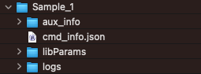
STAR alignments
The sorted (and, in the case of datasets that include UMIs, deduplicated) BAM files and their indices are available:
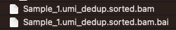
Genome, gene annotations & indices
If the workflow was exectuted with the "save_reference": true parameter, then all reference files (FASTA, GTF, BED, etc) and the indices generated for STAR, salmon and rsem are returned in the genome folder within the output directory:
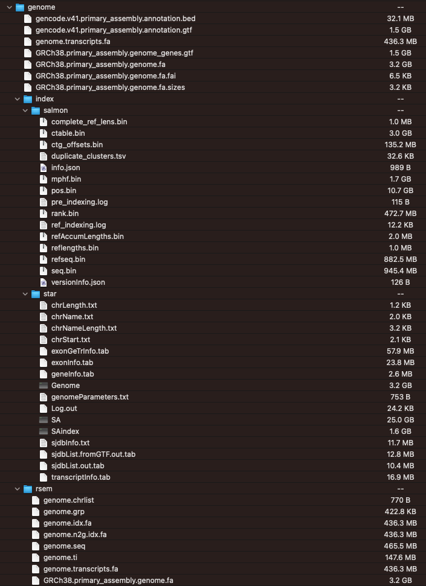
These files can be reused for future runs, shortening the execuction time of the workflow.
Next, we will compare how the gene-counts returned of the nf-core/rnaseq workflow compare to those posted on GEO by the authors of the two datasets we processed in the first post in this series by performing a differential expression analysis in the third and fourth posts in this series.

This work is licensed under a Creative Commons Attribution 4.0 International License.